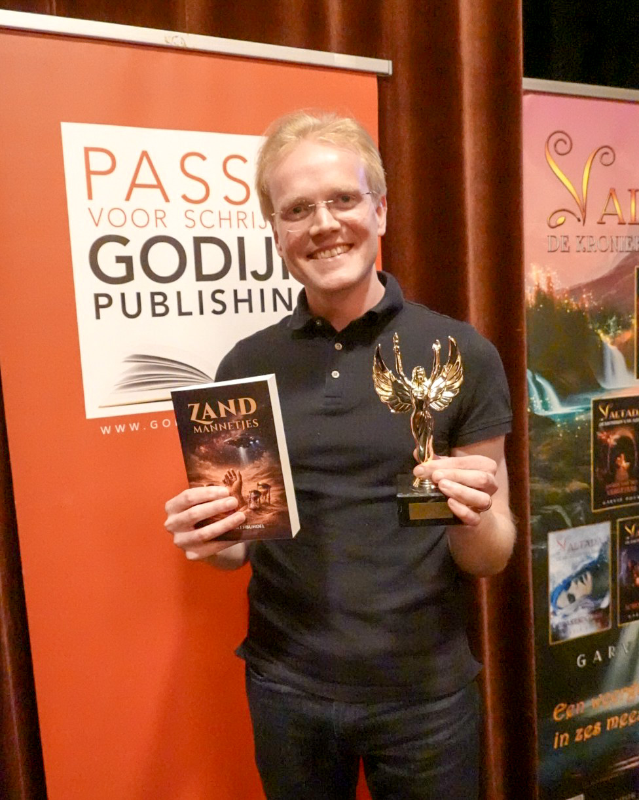

Walkure Award 2026
7 maart 2026
Afgelopen zaterdag (7 maart) kreeg ik tijdens de Walkuredag – georganiseerd door Godijn Publishing – de Walkure Award overhandigd.
De opdracht: schrijf een kort verhaal in het fantastische genre rond het thema ‘Zandmannetjes’.

Mijn verhaal draait om een personage met een diepe angst voor het strand. Om zichzelf te confronteren schrijft ze brieven aan vreemdelingen die ze het jaar ervoor aan het strand heeft ontmoet.
Wat begint als een poging tot verwerking, leidt uiteindelijk naar een duistere onthulling en een zinderende ontknoping.
De bundel met de winnende en geselecteerde verhalen is te bestellen via de boekhandel of via de website van Godijn Publishing.